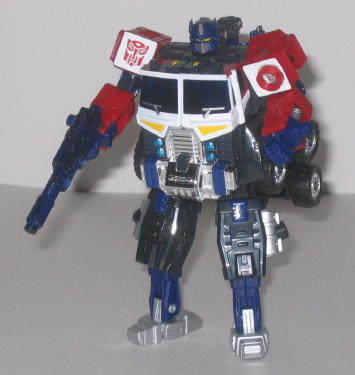
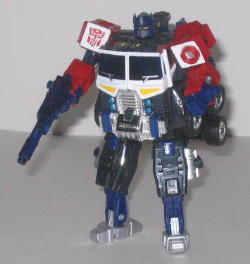

Allegiance : Autobot
Size : Between Basic and Deluxe
Difficulty of Transformation : Easy
Color Scheme : White, dark blue, red, silver, black, and some chrome silver, yellow, transparent dark blue, and chrome teal
Powerlinx ports : 2
Rating : 6.5
Set Price
: $25 (U.S.)
 Optimus
Prime
Optimus
Prime

Allegiance
: Autobot
Size
: Between Basic and Deluxe
Difficulty of Transformation
: Easy
Color Scheme
: White, dark blue,
red, silver, black, and some chrome silver, yellow, transparent dark blue,
and chrome teal
Powerlinx ports
: 2
Rating
: 6.5
Appearances can be decieving-- this "Powerlinx" version of Optimus Prime is actually a different mold than his $40 version. The differences? Well, the major ones are that he doesn't come with a trailer or drones. However, in place of this, he can Powerlinx with other deluxe Energon Autobots, which is a definite plus. His "normal" robot and vehicle modes are pretty accurate when compared with the $40 toy. Which is unforunate-- it's really quite an ugly toy in its individual modes. So all of my comments on the individual modes of $40 Energon Prime, which you can see in his toy review here , apply to this toy as well. A few minor differences-- he has a chrome truck grill, which I prefer over the plain silver of the original one. Those chrome teal headlights look especially cool. Also, his truck windows are transparent plastic, instead of just painted a silverish blue. It looks a little better, but it's not like you can see anything inside or anything. Not all of the changes are for the better, sadly-- his robot head is now VERY clearly visible in his already hideous vehicle mode. It's just looking up from inside his Powerlinx helmet... just staring at you. There's not even an attempt to hide it. The vehicle mode also doesn't seem quite as solid-looking as the $40 toy-- there's some noticeable gaps in the structure on the bottom half when look at from a side angle. As for articulation, Prime's pretty much the same as his Energon version, with the sole exception of his hips, which can now rotate out to the sides instead of just back and forth.
As the top half of a
Powerlinx robot, Prime looks surprisingly good-- his shoulders are big,
yes, but they're symmetrical, and incorporate his various robot parts into
a rather pleasing design. He also has machine guns for hands now, and you
can't beat that. As a matter of fact, I think this is probably the 2nd
best top half of a Powerlinx robot in Energon, second only to
Prowl
.
I'm surprised they managed to incorporate this good of a Powerlinx mode
into a toy that resembles the $40 Energon Prime toy almost exactly.
As the bottom half of
a Powerlinx robot, however, Prime just looks really goofy. The legs and
feet are far too small, and half of his entire body just kinda hangs out
the sides. I definitely don't recommend the time and effort to transform
Prime into this mode, as there's nothing really good about it.
 Megatron
Megatron
Allegiance:
Decepticon
Size
: Ultra
Difficulty of Transformation
: Easy
Color Scheme
: Blue, black, transparent
green, dark gray, off-white, and some light yellow-orange, dark glossy
blue, metallic bluish green, metallic green, bright orange, light pastel
blue, and purplish pink
Powerlinx ports
: 7
Rating
: 8.6
Even though he's smaller, this version of Energon Megatron isn't a different mold-- it's just the downsized Japanese version. He has all the detailing, articulation, etc., of the larger $40 toy . So no new comments there. I have to say, this Ultra size category is much more appropriate for Megatron than a Super size class. The toy just wasn't complex enough for a $40 toy. It's certainly a good size at $25, though, and you don't lose a thing play-wise. In fact, you might actually GAIN some play value, since he's more in scale with the other Energon figures now. The only downside to him mold-wise is that his antlers in robot mode tend to pop out rather easily. As you may be able to tell from the comparison shots above, Megatron's color scheme is basically the same, but there are many small variations. The blue is a bit lighter, the transparent blue-green plastic is now a more suiting normal transparent green, and some of the purple has been changed to dark blue, among other, more minor things. I don't think the colors mesh quite as well as they did on the $40 version, though-- the blue is just a few shades too light, and the sickly blue color used for Megatron's robot face doesn't make him look... healthy. Another small change is that the sounds for the tank attachment have been changed; when you fire the missile, it's now a shorter, less annoying firing sound, and when you make it into a sword, a "clang" effect is made. They're certainly less annoying than $40 Megatron's sounds, that that respect.
This is a pretty good set, priced at just $25 U.S.- you're basically getting Optimus for free. The downsized Megatron is a much more reasonable size for the toy, even if the color scheme isn't quite as good, and Prime has the added benefit of being able to Powerlinx with other Autobots. (Though I still wouldn't qualify him as a good toy-- just slightly better than $40 Prime.) If you only want one version each of Energon Prime and Megatron, I'd definitely recommend this set over buying their larger versions both individually for a total of $80 U.S.
No Stats
Review by Beastbot